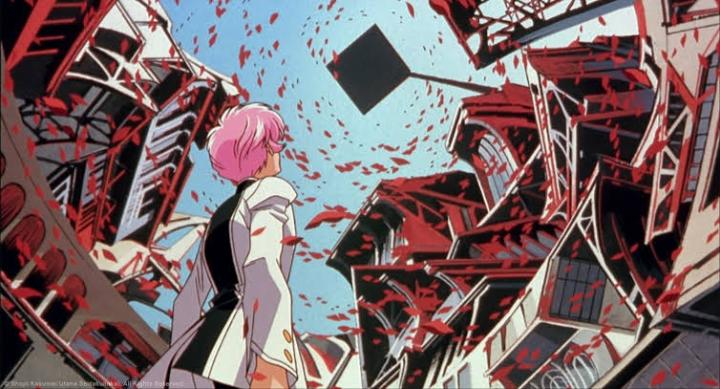
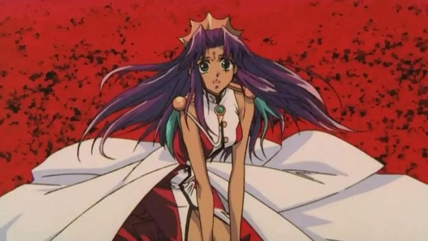

Disclaimer: This is a review of the feature film "Adolescence of Utena," also known as "Revolutionary Girl Utena - The Movie" in some regions. "Revolutionary Girl Utena" has been on my DVD shelf for over a decade now (Rightstuf's beautful DVD and later Bluray releases are now LONG out of print... RIP Rightstuf), and is still in my backlog of things I'll get to eventually. But limited theatrical re-releases are great excuses to get me to finally watch something. GKIDS was the one to bring the film adaptation, "Adolescence of Utena," back to the big screen in 2026, just in time for pride month, and it gives at least a little bit of hope that a physical release of the film (and maybe even the series) is coming back. This is all to say that I have not yet seen the original series of "Utena": "Adolescence" is now my first foray into the classic franchise. And it blew me away - "Utena" is kinda awesome. But a quick Google search verifies this movie is not simply a edited-down version of the series, but a reimagining, much like "Rebuild of Evangelion," "Eureka Seven - Good Night, Sleep Tight, Young Lovers," and "Escaflowne - The Movie." Each of which was also my first real entry point for those franchises. I guess I have a habbit for condensed, stand-alone experiences of long stories. Anyway, I can't comment on the differences between "Adolescence" and "Revolutionary Girl," or which is better, but I'm sure those discussions are fascinating and worth watching both just to participate. Set in an abstract luxurious school of floating architecture, Utena Tenjou is a newly enrolled student (dressed as a male prince for personal reasons, we quickly learn she's a girl). Exploring the grounds, she finds Anthy Himemiya, the "Rose Bride," amongst a field of flowers she cares for. Himemiya's role appears to be for suitors, each wearing a rose-seal ring, to duel each other to "win" her, as if she was a prize, and she doesn't object to being treated as property. Disgusted, and finding a ring entirely by chance before realizing its purpose, Utena wins her first duel, and navigates both Himemiya's backstory that led to this mysterious contest, and her complex love triangle between both Himemiya and a suitor from her own past. "Utena" is up-front with its forward-looking themes of sexuality and cross-dressing, challenging gender norms (perhaps of the time; nothing here is all that scandalous today). And it's unapologetically a Shojo-genre piece, i.e. aimed squarely at female audiences. Beautiful hair and clothing, beautiful men (all "Princes"), complex relationship drama, saucy love-triangles, dark secrets, tasteful nudity, dancing flower petals, endless curtains, frilly school uniforms, painting toenails, sword fights, car washes, highway chases, and so much more, all cramed into an hour and a half. More than not, this was refreshing as a non-female viewer. Some elements cleverly avoid tropes I'd expect in other anime - the duels, for example, use a rule that each opponent is trying to destroy the flower on the other's lapel, stylishly avoiding any threat of blood or violence. That's not to say "Adolescence" isn't dark, on the contrary... Himemiya's role, and complete acceptance of it (treated as property and "spending the night" with her both recent duelist winner), and other references to rape or incest, are shocking and heart-breaking. But somehow, the movie balances being sensesationalist while tasteful. It's exciting and juicy.

(Imagine my surprise to learn "Utena" was written and directed by men. Kunihiko Ikuhara seems to have a style though, being best known for his work on "Sailor Moon," "Penguindrum," and "Sarazanmai" among others. I trust that the female-first audience, or at least LGBTQ audiences, is still a correct observation, but I apologize to anyone offended by my ignorance here, and would still recommend "Utena" to all.)"Adolescence" is fast-paced and exciting from start to end, and part of that is the now-retro sensibilities, and some bizarre sidesteps into inside-comedy that makes virtually no sense if you haven't seen the series. Despite that, the story makes sense... up until it doesn't. The last third is outright bizarre, less "Lady Oscar" and more 'Neon Genesis Evangelion." The film uses abstract metaphor everywhere, but by this point of the movie, all I could do was shrug and go along with wherever it went next. Even with all the intrigue, I don't recommend watching "Adolescence" for the plot, but these wild swings would make the movie a hoot to watch with your local anime club. "Adolescence of Utena" is a great representation of retro, mostly-pre-digital 90's anime. On screen, certain scenes (like the opening shot of tower bells ringing) pop with colour and definition, as if they were drawn today - not every shot is this clean, but the film still looks mostly good. The movie is stylized to the max everywhere, from architecture to clothing to hair and neon colour, using a lot of visual tropes (e.g. endless flower petals in the sky during dramatic moments) without restraint. Does any of it make sense? No, but it looks cool. "Utena" has no relation to CLAMP ("xxxHolic," "Cardcaptor Sakura," "Code Geass"), but fans of those designs will feel right at home with this. As standard for the time, there's a heavy use of reused shots and static shots to save on budget, but the dueling scenes are well choreographed. And the music is dramatic and iconic, with several operatic pop songs inserted during key moments. So yes, "Utena" is gorgeous, but I'll put my foot down on a few things. The poofy school uniforms the background characters wear look goofy, mostly because it looks so impractical for students to wear day to day. And the faces, following Shojo styling for the era... the eyes are huge and dewy, and for some reason, the mouths try to avoid bold outlines, letting the inside colours of the mouth distinguish from the rest of the face. But white teeth and pink tongues don't stand out well against pale-tan skin. These look more like vanilla-strawberry cake than human faces to me. In many ways, "Adolescence of Utena" is both a time-capsule of retro anime aesthetics and a collection of forward-thinking themes. It's a loud, bold adventure, a bit of a mess but a blast to watch. And that's coming from me, someone who doesn't gravitate to retro anime all that much. "Utena" is special, and I can't help but wonder what else I've been missing all this time. - "Ani" More reviews can be found at : https://2danicritic.github.io/ Previous review: review_ACCA_-_13-Territory_Inspection_Dept Next review: review_Afro_Samurai